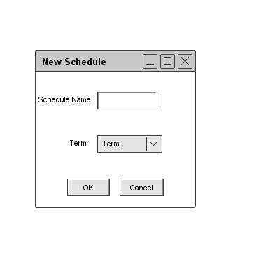
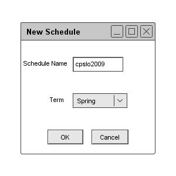

2.8.1. New
When the user executes the `New' command in the `File' menu,
the system responds by displaying the dialog shown in figure 99.

Figure 99: Figure File open dialog
The dialog prompts the user for a schedule name and a term. There are 4 terms to select from: Fall, Winter, Spring, and Summer.
The user can enter the name of the new schedule and the term for the schedule as in figure 100.

Figure 100: Figure File open dialog
The user can click Ok to proceed, the system will respond by removing the dialog, creating a new schedule, and displaying the schedule
generation window in section 2.2.
A new Schedule has no scheduled items or preferences.
Only one schedule can be opened at a time.
prev: file |
next: open |
up: file commands |
index: index